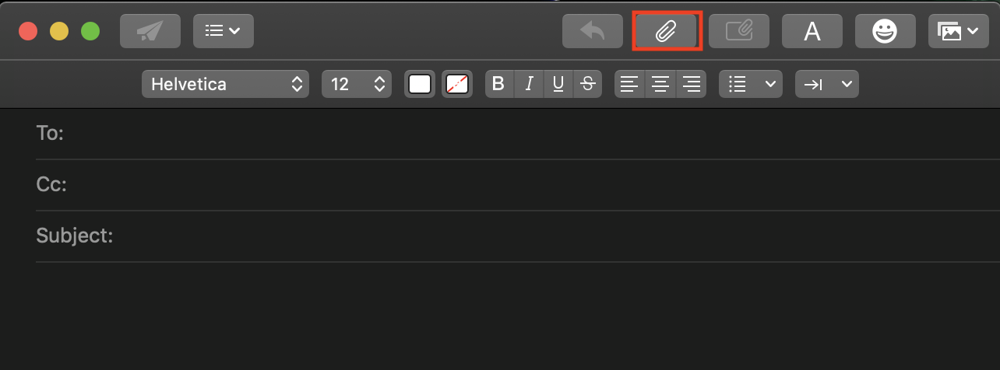
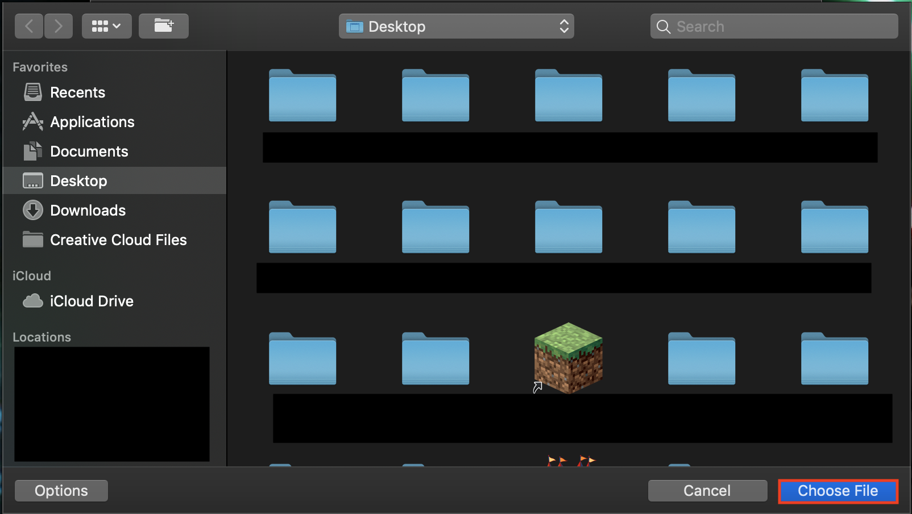
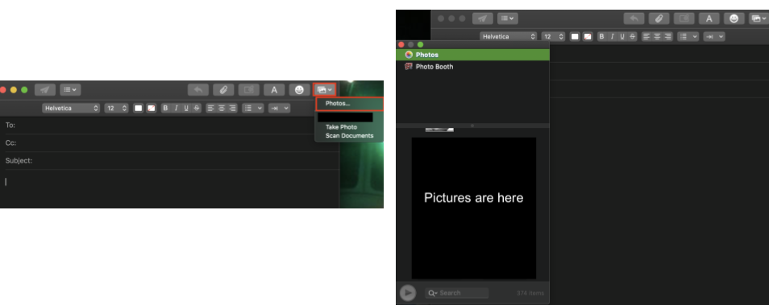
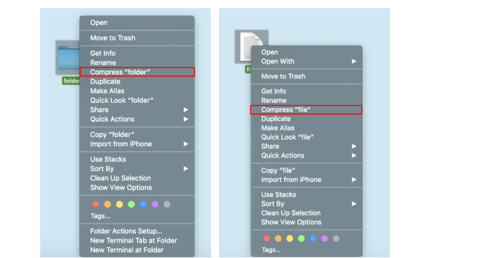
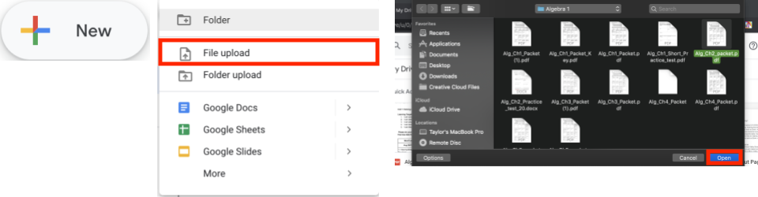
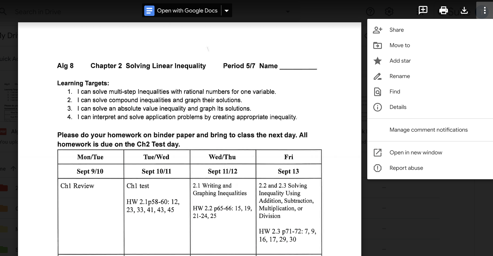
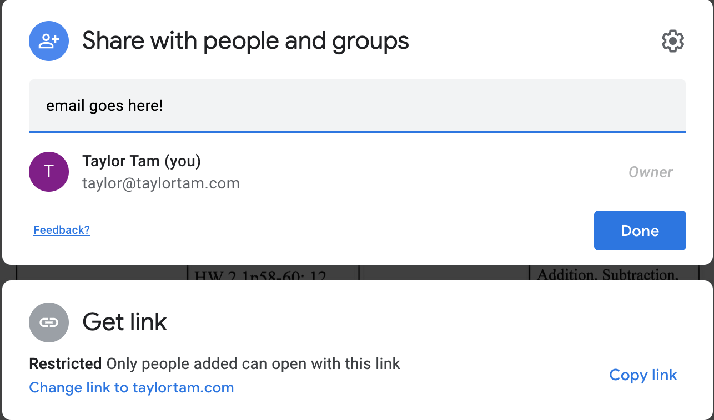

Email normalmente está usado para comunicación formal. Te deja comunicarte rápidamente con otros. Aquí es como mandar y re-enviar un correo electrónico, poner imágenes y archivos, crear otro lugar para tus correos electrónicos, y que hacer cuando tus archivos son muy grandes.

Mandar Correo Electronico
La aplicación de Email ya está instalada en tu computadora/teléfono. Si tienes un Chromebook o Android, debes de tener un gmail, que es casi la misma cosa.
En la esquina izquierda alta, debes de tener un botón que tiene un cuadro y un lápiz. Si haces clic en esto, la computadora debe abrir un nuevo email que puedes editar.
En la sección 'para:', pon el correo electrónico de la persona a la que estás escribiendo. Cc son las personas que está agregando al correo electrónico. Si no va a agregar a nadie, deje este cuadro en blanco.
En la sección de asunto, puede poner un título breve para que alguien sepa de qué se trata el correo electrónico. Luego, a continuación, ingrese lo que quiera escribir.
Luego presione el botón enviar (el avión de papel en la esquina superior izquierda)


Reenviando Mensajes
Paso 1: Abre el email que quieres reenviar
Paso 2: Si pasas el cursor sobre la línea divisoria, deberías ver cuatro símbolos. Uno de los símbolos es una flecha que apunta hacia la derecha. ¡Haz clic en este!
Paso 3: Escribe el dirección del correo electrónico de la persona en que quieres reenviar en mensaje. Si quieres, también puedes añadir un mensaje personal debajo del sujeto.
Paso 4: Haz clic en la flecha de enviar


Adjuntar archivos y agregar imágenes
Una vez que haya abierto un correo electronico, hay una opción que le permite adjuntar un archivo.
Presione el botón del clip en la esquina superior derecha, y debería ver todos los archivos en su computadora.
Puedes buscar el archivo escribiendo el nombre en la barra de búsqueda o buscarlo manualmente revisando sus carpetas.
Finalmente, simplemente presione 'elegir archivo', ¡y listo!
Hay varias formas de adjuntar imágenes a su correo electrónico.
La forma más sencilla es buscar la imagen (si esta bajado) en su computadora. Si haces clic derecho en esta imagen, hay una opción que dice 'copiar'. Si lo copias, haga clic en tu correo electrónico, luego puedes presionar ⌘Cmd + P y se pegará directamente.
La otra forma es adjuntar la imagen a través de la función de foto en su computadora. Esto significa que tomaste esta foto con su computadora o celular, simplemente puedes elegirla y ponerla en su correo electrónico.
En la esquina superior derecha del correo de su correo electrónico, hay un pequeño ícono que parece una foto. Haga clic en este.
Después de eso, puede elegir 'fotos'. Desde aquí, puedes ver todas sus fotos tanto desde tu teléfono como desde tu computadora
Una vez que hayas encontrado la foto que deseas poner en tu correo electrónico, puede arrastrarla a tu correo.



Qué hacer cuando los archivos son demasiado grandes
A veces, cuando estas enviando un archivo por correo electrónico, puede ser demasiado grande. El límite de tamaño para enviar archivos por correo electrónico es de 10 MB. Si supera esto, existen múltiples formas de enviarlo.
Método 1: a veces, el archivo supera este límite por muy poco. En este caso, es posible comprimir el archivo.
En mac o PC, todo lo que tienes que hacer es hacer clic derecho en el archivo y seleccionar 'comprimir'
Si tienes varios archivos que desea comprimir, puede crear una carpeta (haciendo clic con el botón derecho en el escritorio y eligiendo 'nueva carpeta') y comprimir toda la carpeta.
Luego, siga los pasos anteriores para enviar el archivo.
Método 2: Si tu archivo supera el límite de tamaño (por mucho) del correo electrónico, puede compartirlo a través de Google Drive. (Si no tienes una cuenta de Google configurada, consulte la sección de procedimientos de Google)
Abra su unidad de Google. Deberías ver un botón que dice '+ nuevo'. Si haces clic aquí, verás una opción llamada "carga de archivo". Haga clic en esto.
Abre tu Finder y luego podrás hacer clic en el archivo que desees cargar en Google. Una vez que hayas encontrado su archivo, haga clic en él y presione el botón 'abrir' en la esquina inferior derecha.
Una vez que el archivo esté en su Google Drive (esto debería ser casi instantáneo), haga clic en él para abrirlo. En la esquina superior derecha, debe haber tres puntos. Si haces clic aquí, le da la opción de compartir este archivo con la cuenta de Google de otra persona.
Haga clic aquí y presione compartir. Luego ingresete el correo electrónico de la persona con la que desea compartirlo. Esto les permitirá acceder al archivo a través de google. Puede enviarles el enlace haciendo clic en 'copiar enlace' y luego pegarlo con ⌘Cmd+P en tu correo electrónico.




Creando un buzón nuevo
Todas las cuentas de correo electrónico estándares tienen varios buzones de correo. Hay bandeja de entrada, banderas enviadas y papelera. Es posible crear otras bandejas de entrada para organizar tu correo electrónico
Paso 1: Abra la aplicación de correo y haga clic en el botón derecho en la sección debajo de 'en mi mac'. Elija la sección 'nuevo buzón'.
Paso 2: luego elija la ubicación del correo electrónico. Si eliges "en mi mac", es local; esto significa que solo está en tu computadora. Si eliges su cuenta, podrás verla desde cualquier dispositivo que esté conectado a su cuenta de correo electrónico. Si eliges un buzón existente, este nuevo buzón será como una subcarpeta.
Una vez que hayas elegido una ubicación, asigne un nombre al buzón y haga clic en "Aceptar".
Paso 4: Puedes organizar tus mensajes arrastrándolos a tu nuevo buzón.